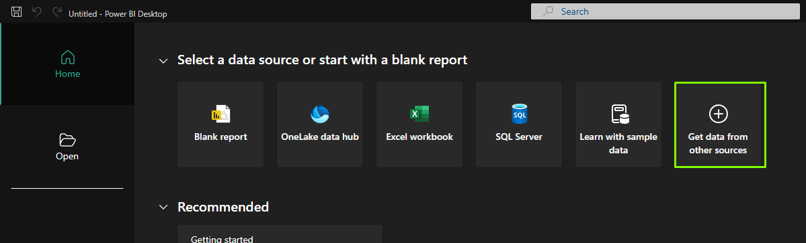
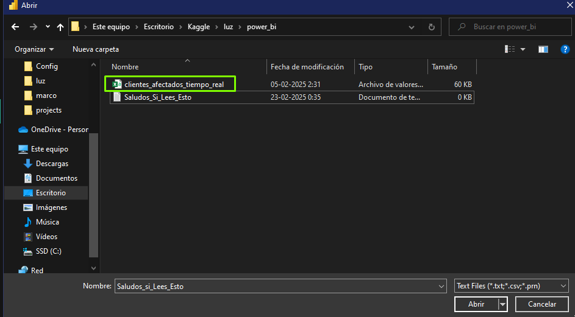
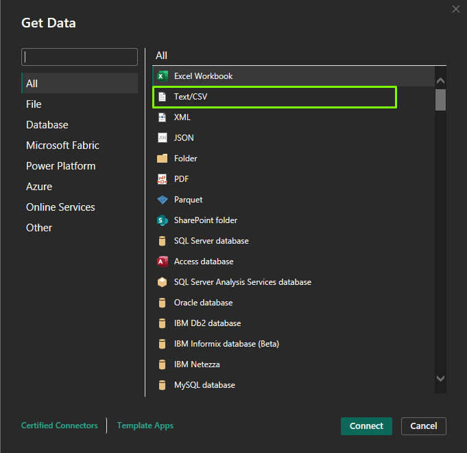
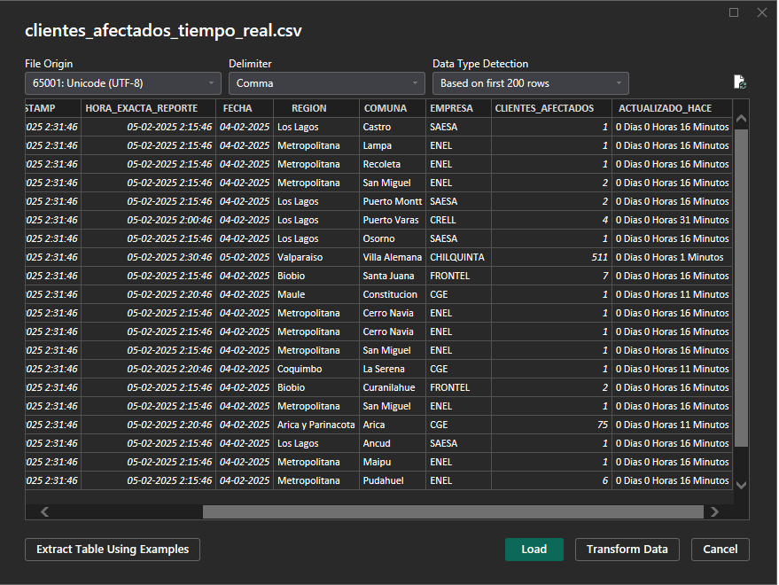
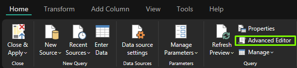
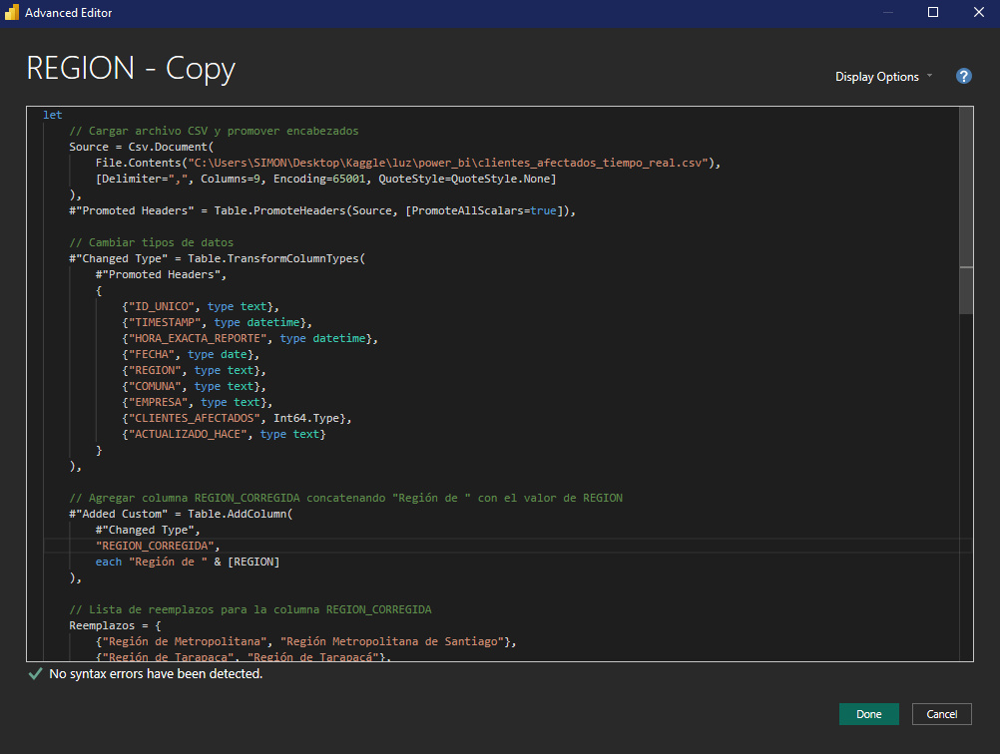

⚡ Análisis en Tiempo Real del Suministro Eléctrico de Chile ⚡
Introducción
Hace poco descubrí la página de la Superintendecia de Electricidad y Combustibles (SEC). Me llamó la atención en particular su sección de métricas e información de los cortes de luz a nivel nacional, debido a que noté que hay un gran margen de mejora en su accesibilidad y visualización de los datos para el usuario.
¿Qué haremos?
Preparar nuestro entorno: primero, instalaremos las dependencias necesarias para el proyecto.
Extracción de los datos: aprenderemos a realizar web scraping con Playwright.
Transformación de los datos: necesitaremos limpiar y procesar los datos extraídos con Pandas.
Visualización de los datos: finalmente, visualizaremos los datos en Powerbi.
Entorno de Desarrollo
Para este proyecto, necesitaremos instalar las siguientes dependencias: Playwright, Pandas y Powerbi.
Les recomiendo crear un entorno virtual para instalar las dependencias. Para ello, decidan un directorio donde quieran crear el entorno virtual y ejecuten el siguiente comando en la terminal:
python -m venv "nombre-del-entorno"-env
Una vez creado el entorno virtual, actívenlo con el siguiente comando:
source "nombre-del-entorno"-env/bin/activate
Ahora, instalemos las dependencias necesarias:
pip install playwright pandas
Extracción de los Datos
Primero, necesitamos importar las librerías necesarias:
from playwright.sync_api import sync_playwright
import pandas as pd🚀 Instalar Dependencias
Con el entorno virtual activado, instalemos las librerías necesarias:
pip install playwright pandas
Además, debemos instalar los navegadores de Playwright:
playwright install🔍 Extracción de Datos con Playwright
Usaremos Playwright para interceptar las respuestas de la API de la SEC.
📌 Importación de Librerías
from playwright.sync_api import sync_playwright
import pandas as pd
import os
import time
import re
from datetime import datetime, timedelta📂 Definición de Archivos de Salida
Guardaremos los datos en dos archivos CSV:
clientes_afectados_tiempo_real.csv: Contiene los datos más recientes.clientes_afectados_historico.csv: Mantiene un registro histórico.
csv_tiempo_real = "clientes_afectados_tiempo_real.csv"
csv_historico = "clientes_afectados_historico.csv"🔎 Análisis de la Función intercept_responses()
Esta función usa Playwright para interceptar las respuestas de la API de la Superintendencia de Electricidad y Combustibles de Chile (SEC) y extraer información sobre cortes de luz. Luego, almacena estos datos en archivos CSV.
📌 Estructura General
- Abrir un navegador en modo headless (sin interfaz gráfica).
- Interceptar las respuestas de la API en la página de la SEC.
- Extraer información clave de los datos JSON recibidos.
- Procesar los datos para calcular tiempos y crear identificadores únicos.
- Guardar la información en archivos CSV.
- Cerrar el navegador una vez completado el proceso.
🛠 Paso a Paso de la Función
2️⃣ Definir una Lista para Almacenar Registros
registros = [] # Lista para almacenar datos nuevos📌 ¿Para qué sirve?
- Aquí se guardarán los datos extraídos de la API antes de escribirlos en los archivos CSV.
3️⃣ Interceptar las Respuestas de la API
def handle_response(response):
if "GetPorFecha" in response.url:
try:
data = response.json()
timestamp_actual = datetime.now() # Tiempo de consulta📌 ¿Qué hace esto?
- Verifica si la URL de la respuesta contiene
"GetPorFecha", lo que indica que es una respuesta de la API relevante. - Convierte la respuesta en JSON (
response.json()). - Guarda el timestamp actual para identificar cuándo se hizo la consulta.
4️⃣ Procesar los Datos Extraídos
for entry in data:
actualizado_hace = entry.get("ACTUALIZADO_HACE", "")
minutos_atras = 0
match = re.search(r'(\d+)\s+Minutos', actualizado_hace)
if match:
minutos_atras = int(match.group(1)) # Extrae el número antes de "Minutos"
hora_exacta_reporte = timestamp_actual - timedelta(minutes=minutos_atras)📌 ¿Qué hace esto?
- Extrae el campo
"ACTUALIZADO_HACE", que indica hace cuánto tiempo se actualizó la información. - Usa una expresión regular (
re.search) para extraer los minutos mencionados en"ACTUALIZADO_HACE". - Calcula la hora exacta del reporte, restando esos minutos del timestamp actual.
5️⃣ Crear un Identificador Único para Cada Registro
unique_id = f"{entry.get('FECHA_INT_STR', '')}-{entry.get('REGION', '')}-{entry.get('COMUNA', '')}-{entry.get('EMPRESA', '')}-{entry.get('CLIENTES_AFECTADOS', 0)}-{hora_exacta_reporte.strftime('%Y-%m-%d %H:%M:%S')}"📌 ¿Por qué es importante esto?
- Evita la duplicación de datos, asegurando que cada registro tenga un ID único.
- Facilita la organización en los archivos CSV.
6️⃣ Guardar los Datos en la Lista registros
registros.append({
"ID_UNICO": unique_id,
"TIMESTAMP": timestamp_actual.strftime("%Y-%m-%d %H:%M:%S"),
"HORA_EXACTA_REPORTE": hora_exacta_reporte.strftime("%Y-%m-%d %H:%M:%S"),
"FECHA": entry.get("FECHA_INT_STR", ""),
"REGION": entry.get("NOMBRE_REGION", ""),
"COMUNA": entry.get("NOMBRE_COMUNA", ""),
"EMPRESA": entry.get("NOMBRE_EMPRESA", ""),
"CLIENTES_AFECTADOS": entry.get("CLIENTES_AFECTADOS", 0),
"ACTUALIZADO_HACE": actualizado_hace
})📌 ¿Qué hace esto?
- Guarda cada registro como un diccionario dentro de la lista
registros. - Almacena los datos clave como fecha, región, comuna, empresa y clientes afectados.
7️⃣ Capturar las Respuestas de la API
page.on("response", handle_response)📌 ¿Qué hace esto?
- Asocia la función
handle_responsecon cada respuesta de la página. - Intercepta las respuestas en segundo plano mientras se carga la web.
8️⃣ Acceder a la Página de la SEC
page.goto("https://apps.sec.cl/INTONLINEv1/index.aspx")
page.wait_for_timeout(5000) # Espera para capturar datos📌 ¿Qué hace esto?
- Abre la página de la SEC en el navegador.
- Espera 5 segundos para permitir la carga de datos.
📊 Guardado de Datos en CSV
if registros:
df_new = pd.DataFrame(registros)
# 📌 Guardar en CSV histórico
if os.path.exists(csv_historico):
df_historico = pd.read_csv(csv_historico, encoding="utf-8-sig")
df_historico = pd.concat([df_historico, df_new]).drop_duplicates(subset=["ID_UNICO"], keep="first")
else:
df_historico = df_new
df_historico.to_csv(csv_historico, index=False, encoding="utf-8-sig")
# 📌 Guardar en CSV de Tiempo Real
df_new.to_csv(csv_tiempo_real, index=False, encoding="utf-8-sig")
print(f"✅ Datos guardados en:\n📌 {csv_historico} (Histórico)\n📌 {csv_tiempo_real} (Tiempo Real)")📌 ¿Qué hace esto?
- Convierte los registros en un DataFrame de Pandas.
- Guarda los datos en CSV histórico y de tiempo real.
- Evita duplicados basándose en el ID único.
🔁 Automatización Cada 5 Minutos
while True:
intercept_responses()
print("⏳ Esperando 5 minutos para la siguiente ejecución...\n")
time.sleep(5 * 60) # 5 minutos en segundos📌 ¿Qué hace esto?
- Ejecuta
intercept_responses()en un bucle infinito. - Espera 5 minutos (
time.sleep(5 * 60)) antes de volver a ejecutar la función.
Felicidades⭐!
Ya tenemos nuestra base de datos casi lista para su visualización. Si bien podríamos terminar de darle formato a los datos directamente con pandas, es una perfecta ocasión para hacerlo en powerbi, ya que podremos visualizar con facilidad los cambios que iremos realizando para construir nuestro dashboard interactivo.
Aclaración 🔴
Este no es un tutorial de cómo utilizar PowerBI, por lo que es necesario saber lo básico para poder seguir el tutorial: instalación, configuración, comandos, etc.
Powerbi: transformación y Visualización de los datos
Dependiendo de la carpeta donde hayamos realizado nuestro proyecto, podremos encontrar el archivo resultante, el cual utilizaremos ahora.
Para poder manipular nuestros datos en Powerbi hay que seguir estos sencillos pasos:
Abrir PowerBI
Click en Get data from other sources

- Seleccionamos Text/CSV

- Buscamos nuestro archivo .csv

- Click en Load

A continuación explicaré paso a paso el código M que utilizamos para transformar datos en Power Query. Este script carga nuestro archivo CSV, promociona los encabezados, cambia los tipos de datos, agrega una columna personalizada concatenando un texto fijo con el valor existente en la columna REGION, y aplica una serie de reemplazos para corregir los nombres de las regiones de forma automatizada.
- En la sección Home click en Advanced Editor

Copia y pega el código de más abajo
Click en Done

Código M
let
// Cargar archivo CSV y promover encabezados
Source = Csv.Document(
File.Contents("C:\Users\SIMON\Desktop\Kaggle\luz\power_bi\clientes_afectados_tiempo_real.csv"),
[Delimiter=",", Columns=9, Encoding=65001, QuoteStyle=QuoteStyle.None]
),
#"Promoted Headers" = Table.PromoteHeaders(Source, [PromoteAllScalars=true]),
// Cambiar tipos de datos
#"Changed Type" = Table.TransformColumnTypes(
#"Promoted Headers",
{
{"ID_UNICO", type text},
{"TIMESTAMP", type datetime},
{"HORA_EXACTA_REPORTE", type datetime},
{"FECHA", type date},
{"REGION", type text},
{"COMUNA", type text},
{"EMPRESA", type text},
{"CLIENTES_AFECTADOS", Int64.Type},
{"ACTUALIZADO_HACE", type text}
}
),
// Agregar columna REGION_CORREGIDA concatenando "Región de " con el valor de REGION
#"Added Custom" = Table.AddColumn(
#"Changed Type",
"REGION_CORREGIDA",
each "Región de " & [REGION]
),
// Lista de reemplazos para la columna REGION_CORREGIDA
Reemplazos = {
{"Región de Metropolitana", "Región Metropolitana de Santiago"},
{"Región de Tarapaca", "Región de Tarapacá"},
{"Región de Magallanes", "Región de Magallanes y Antártica Chilena"},
{"Región de Aysén", "Región de Aysén del Gral.Ibañez del Campo"},
{"Región de O`Higgins", "Región del Libertador Bernardo O'Higgins"},
{"Región de Biobio", "Región del Bío-Bío"},
{"Región de La Araucania", "Región de La Araucanía"},
{"Región de Los Rios", "Región de los Ríos"},
{"Región de Valparaiso", "Región de Valparaíso"},
{"Región de Maule", "Región del Maule"}
},
// Aplicar reemplazos a REGION_CORREGIDA de forma acumulativa
Resultado = List.Accumulate(
Reemplazos,
#"Added Custom",
(tabla, par) => Table.ReplaceValue(
tabla,
par{0},
par{1},
Replacer.ReplaceText,
{"REGION_CORREGIDA"}
)
)
in
ResultadoExplicación del código M
A continuación, desglosamos cada parte del código para comprender su funcionamiento.
📌 Cargar el Archivo CSV y Promover Encabezados
Source = Csv.Document(
File.Contents("C:\Users\SIMON\Desktop\Kaggle\luz\power_bi\clientes_afectados_tiempo_real.csv"),
[Delimiter=",", Columns=9, Encoding=65001, QuoteStyle=QuoteStyle.None]
),
#"Promoted Headers" = Table.PromoteHeaders(Source, [PromoteAllScalars=true])¿Qué hace esto?
- Csv.Document & File.Contents: Carga el archivo CSV desde la ruta especificada.
- Table.PromoteHeaders: Convierte la primera fila en los nombres de columna, facilitando la manipulación posterior.
📌 Cambiar Tipos de Datos
#"Changed Type" = Table.TransformColumnTypes(
#"Promoted Headers",
{
{"ID_UNICO", type text},
{"TIMESTAMP", type datetime},
{"HORA_EXACTA_REPORTE", type datetime},
{"FECHA", type date},
{"REGION", type text},
{"COMUNA", type text},
{"EMPRESA", type text},
{"CLIENTES_AFECTADOS", Int64.Type},
{"ACTUALIZADO_HACE", type text}
}
)¿Qué hace esto?
- Se establecen los tipos de datos adecuados para cada columna, lo que es crucial para evitar errores y asegurar que los cálculos o transformaciones posteriores se realicen correctamente.
📌 Agregar una Columna Personalizada
#"Added Custom" = Table.AddColumn(
#"Changed Type",
"REGION_CORREGIDA",
each "Región de " & [REGION]
)¿Qué hace esto?
- Table.AddColumn: Agrega una nueva columna a la tabla.
- “REGION_CORREGIDA”: Es el nombre de la nueva columna.
- each “Región de” & [REGION]: Para cada fila, concatena el texto fijo
"Región de "con el valor existente en la columna REGION.
Ejemplo:
Si el valor en REGION es "Metropolitana", el resultado en REGION_CORREGIDA será "Región de Metropolitana".
📌 Aplicar Reemplazos de Forma Acumulativa
Definición de la Lista de Reemplazos
Reemplazos = {
{"Región de Metropolitana", "Región Metropolitana de Santiago"},
{"Región de Tarapaca", "Región de Tarapacá"},
{"Región de Magallanes", "Región de Magallanes y Antártica Chilena"},
{"Región de Aysén", "Región de Aysén del Gral.Ibañez del Campo"},
{"Región de O`Higgins", "Región del Libertador Bernardo O'Higgins"},
{"Región de Biobio", "Región del Bío-Bío"},
{"Región de La Araucania", "Región de La Araucanía"},
{"Región de Los Rios", "Región de los Ríos"},
{"Región de Valparaiso", "Región de Valparaíso"},
{"Región de Maule", "Región del Maule"}
}¿Qué hace esto?
- Se define una lista de pares, donde cada par contiene:
- Texto original: Valor que aparece en la columna REGION_CORREGIDA.
- Texto corregido: Valor con el que se reemplazará el texto original.
Aplicación de los Reemplazos con List.Accumulate
Resultado = List.Accumulate(
Reemplazos,
#"Added Custom",
(tabla, par) => Table.ReplaceValue(
tabla,
par{0},
par{1},
Replacer.ReplaceText,
{"REGION_CORREGIDA"}
)
)¿Qué hace esto?
- List.Accumulate: Itera sobre cada par de la lista Reemplazos.
- #“Added Custom”: Es el paso inicial que contiene la tabla con la nueva columna REGION_CORREGIDA.
- Table.ReplaceValue: En cada iteración, reemplaza el valor par{0} (texto original) por par{1} (texto corregido) en la columna REGION_CORREGIDA.
- El proceso es acumulativo: cada reemplazo se aplica sobre el resultado del reemplazo anterior.
Construcción de métricas, el mapa interactivo y gráficos
Medidas
En PowerBi utilizamos una herramienta llamada medida, con esta podemos realizar cálculos utilizando la sintaxis adecuada, lo que permite construir métricas a partir de nuestros datos
Última Actualización
Última Actualización = MAX('clientes_afectados_historico'[TIMESTAMP]) Con esta medida podremos construir una card con la hora actual que corresponde la información
Total de Hogares sin Luz
Variación respecto a la medición anterior
Variación Afectados Histórica =
VAR ultimoTiempo = MAX(clientes_afectados_historico[TIMESTAMP])
VAR PenultimoTiempo =
CALCULATE(MAX(clientes_afectados_historico[TIMESTAMP]),
clientes_afectados_historico[TIMESTAMP] < ultimoTiempo)
VAR Afectados_Ultima =
CALCULATE(SUM(clientes_afectados_historico[CLIENTES_AFECTADOS]),
clientes_afectados_historico[TIMESTAMP] = ultimoTiempo)
VAR Afectados_Anterior =
CALCULATE(SUM(clientes_afectados_historico[CLIENTES_AFECTADOS]),
clientes_afectados_historico[TIMESTAMP] = PenultimoTiempo)
RETURN
Afectados_Ultima - Afectados_Anterior